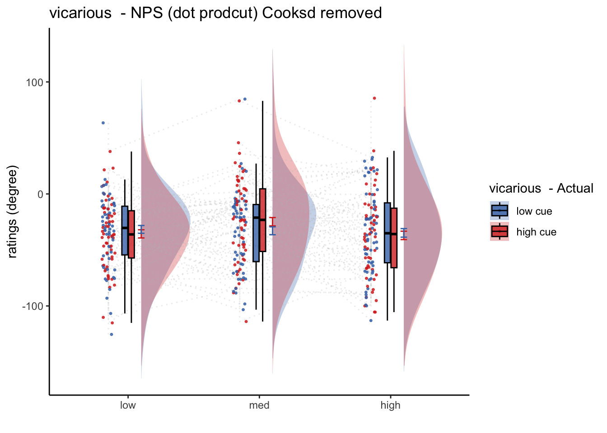

Chapter 20 nps_dummy ~ stim
20.2 regressors and contrasts
What regressors were used in the neural model and how did you create contrasts?
This Rmd is based on the univariate analysis mainly using 2 factors (cue x stimulus intensity).
- The 6 regressors of interest are
- high-cue_high-stim
- high-cue_med-stim
- high-cue_low-stim
- low-cue_high-stim
- low-cue_med-stim
- low-cue_low-stim.
If interested, the variable of interest is coded “
onset03_stim” in the behavioral data.
- Additional regressors include 7) cue_onset “
onset01_cue”, 8) onset of the expectation rating phase “onset02_ratingexpect” convolved with the reaction time of the expectation rating “pmod_expectRT”, and 9) onset of the outcome rating phase “onset04_ratingoutcome”, convolved with the reaction time of the outcome rating “pmod_outcomeRT”. - Motion covariates include a) csf, b) 24 DOF head motion variables, and c) spikes derived using a FD-spike-threshold of 0.9mm. Participants with a motion spike of more than 20 per run is excluded from the analysis. For the 6 regressors of interest, I build 5 contrasts that capture the cue effect, the stimulus intensity effect, and the interaction of these two factors.
20.3 Functions
main_dir = dirname(dirname(getwd()))
datadir = file.path(main_dir, 'data', 'beh', 'beh02_preproc')
analysis_dir = file.path(main_dir,'analysis','mixedeffect','model13_iv-stim_dv-nps-dummy',as.character(Sys.Date()) )
dir.create(analysis_dir, showWarnings = FALSE, recursive = TRUE)
savedir <- analysis_dir
npsdir = file.path(main_dir,'analysis','fmri','spm','univariate','model01_6cond_nonscaled','extract_nps')
model = 'nps'; model_keyword = "nps"
subjectwise_mean = "mean_per_sub"; group_mean = "mean_per_sub_norm_mean"; se = "se"
# iv = "contrast"; subject = "subject"
# dv = "nps"; dv_keyword = "nps_dot_product"
ylim = c(-800, 800)
xlab = "contrasts "; ylab = "NPS dotproduct"
ggtitle = paste0(model_keyword,
" :: extracted NPS value for stimulus intensity wise contrast")
legend_title = "Contrasts"
color_scheme <- c("Pain > VC" = "#941100",
"Vicarious > PC" = "#008F51",
"Cog > PV" = "#011891")pain_nps <- list(model = 'nps', model_keyword = "nps",
subjectwise_mean = "mean_per_sub", group_mean = "mean_per_sub_norm_mean", se = "se",
ylim = c(-800, 800),xlab = "contrasts", ylab = "NPS dotproduct")
#class(studentBio) <- "StudentInfo"
pain_nps## $model
## [1] "nps"
##
## $model_keyword
## [1] "nps"
##
## $subjectwise_mean
## [1] "mean_per_sub"
##
## $group_mean
## [1] "mean_per_sub_norm_mean"
##
## $se
## [1] "se"
##
## $ylim
## [1] -800 800
##
## $xlab
## [1] "contrasts"
##
## $ylab
## [1] "NPS dotproduct"20.4 Pain
- from con_0032 ~ con_0037
## $$
## \begin{aligned}
## \operatorname{nps}_{i} &\sim N \left(\mu, \sigma^2 \right) \\
## \mu &=\alpha_{j[i]} + \beta_{1}(\operatorname{cue\_con}) + \beta_{2}(\operatorname{stim\_con\_linear}) + \beta_{3}(\operatorname{stim\_con\_quad}) + \beta_{4}(\operatorname{cue\_con} \times \operatorname{stim\_con\_linear}) + \beta_{5}(\operatorname{cue\_con} \times \operatorname{stim\_con\_quad}) \\
## \alpha_{j} &\sim N \left(\mu_{\alpha_{j}}, \sigma^2_{\alpha_{j}} \right)
## \text{, for subject j = 1,} \dots \text{,J}
## \end{aligned}
## $$
## [1] "model: Nps-Dotproduct ratings - pain"
## Linear mixed model fit by REML. t-tests use Satterthwaite's method [
## lmerModLmerTest]
## Formula: as.formula(model_string)
## Data: data
##
## REML criterion at convergence: 4300.7
##
## Scaled residuals:
## Min 1Q Median 3Q Max
## -3.2758 -0.5227 -0.0085 0.4592 3.5911
##
## Random effects:
## Groups Name Variance Std.Dev.
## subject (Intercept) 19315 138.98
## Residual 6293 79.33
## Number of obs: 360, groups: subject, 60
##
## Fixed effects:
## Estimate Std. Error df t value Pr(>|t|)
## (Intercept) 53.966 18.423 59.000 2.929 0.00482 **
## cue_con 2.214 8.362 295.000 0.265 0.79137
## stim_con_linear 16.898 10.241 295.000 1.650 0.10002
## stim_con_quad -1.507 8.959 295.000 -0.168 0.86656
## cue_con:stim_con_linear -12.486 20.483 295.000 -0.610 0.54262
## cue_con:stim_con_quad 6.715 17.918 295.000 0.375 0.70812
## ---
## Signif. codes: 0 '***' 0.001 '**' 0.01 '*' 0.05 '.' 0.1 ' ' 1
##
## Correlation of Fixed Effects:
## (Intr) cue_cn stm_cn_l stm_cn_q c_cn:stm_cn_l
## cue_con 0.000
## stim_cn_lnr 0.000 0.000
## stim_con_qd 0.000 0.000 0.000
## c_cn:stm_cn_l 0.000 0.000 0.000 0.000
## c_cn:stm_cn_q 0.000 0.000 0.000 0.000 0.000
## $$
## \begin{aligned}
## \operatorname{nps}_{i} &\sim N \left(\mu, \sigma^2 \right) \\
## \mu &=\alpha_{j[i]} + \beta_{1}(\operatorname{cue\_con}) + \beta_{2}(\operatorname{stim\_con\_linear}) + \beta_{3}(\operatorname{stim\_con\_quad}) + \beta_{4}(\operatorname{cue\_con} \times \operatorname{stim\_con\_linear}) + \beta_{5}(\operatorname{cue\_con} \times \operatorname{stim\_con\_quad}) \\
## \alpha_{j} &\sim N \left(\mu_{\alpha_{j}}, \sigma^2_{\alpha_{j}} \right)
## \text{, for subject j = 1,} \dots \text{,J}
## \end{aligned}
## $$ data_screen$cue_name[data_screen$cue == "highcue"] <- "high cue"
data_screen$cue_name[data_screen$cue == "lowcue"] <- "low cue"
data_screen$stim_name[data_screen$stim == "highstim"] <- "high"
data_screen$stim_name[data_screen$stim == "medstim"] <- "med"
data_screen$stim_name[data_screen$stim == "lowstim"] <- "low"
data_screen$stim_ordered <- factor(
data_screen$stim_name,
levels = c("low", "med", "high")
)
data_screen$cue_ordered <- factor(
data_screen$cue_name,
levels = c("low cue", "high cue")
)
model_iv1 <- "stim_ordered"
model_iv2 <- "cue_ordered"
# [ PLOT ] calculate mean and se _________________________
actual_subjectwise <- meanSummary(
data_screen,
c(subject_keyword, model_iv1, model_iv2), dv
)
actual_groupwise <- summarySEwithin(
data = actual_subjectwise,
measurevar = "mean_per_sub",
withinvars = c(model_iv1, model_iv2), idvar = subject_keyword
)
nps_groupwise <- summarySEwithin(
data = data_screen,
measurevar = "nps",
withinvars = c(model_iv1, model_iv2), idvar = subject_keyword
)
actual_groupwise$task <- taskname## Warning: Removed 1 rows containing non-finite values (`stat_half_ydensity()`).## Warning: Removed 1 rows containing non-finite values (`stat_boxplot()`).## Warning: Removed 615 rows containing missing values (`geom_half_violin()`).## Warning: Removed 1 rows containing missing values (`geom_point()`).
# classwise <- meanSummary(merge_df,
# c(subject_keyword, iv), dv)
# groupwise <- summarySEwithin(data = classwise,
# measurevar = subjectwise_mean,
# withinvars = c(iv))
#
# subjectwise = subset(classwise, select = -c(sd))20.5 Vicarious
- from con_0038 ~ con_0043
## [1] "V_simple"## $$
## \begin{aligned}
## \operatorname{npspos}_{i} &\sim N \left(\mu, \sigma^2 \right) \\
## \mu &=\alpha_{j[i]} + \beta_{1}(\operatorname{cue\_con}) + \beta_{2}(\operatorname{stim\_con\_linear}) + \beta_{3}(\operatorname{stim\_con\_quad}) + \beta_{4}(\operatorname{cue\_con} \times \operatorname{stim\_con\_linear}) + \beta_{5}(\operatorname{cue\_con} \times \operatorname{stim\_con\_quad}) \\
## \alpha_{j} &\sim N \left(\mu_{\alpha_{j}}, \sigma^2_{\alpha_{j}} \right)
## \text{, for subject j = 1,} \dots \text{,J}
## \end{aligned}
## $$
## [1] "model: Npspos ratings - pain"
## Linear mixed model fit by REML. t-tests use Satterthwaite's method [
## lmerModLmerTest]
## Formula: as.formula(model_string)
## Data: data
##
## REML criterion at convergence: 3657.6
##
## Scaled residuals:
## Min 1Q Median 3Q Max
## -3.4450 -0.5393 0.0250 0.5545 3.3735
##
## Random effects:
## Groups Name Variance Std.Dev.
## subject (Intercept) 508.9 22.56
## Residual 1381.2 37.16
## Number of obs: 360, groups: subject, 60
##
## Fixed effects:
## Estimate Std. Error df t value Pr(>|t|)
## (Intercept) -33.89545 3.50964 59.00000 -9.658 9.32e-14 ***
## cue_con -0.03744 3.91746 295.00000 -0.010 0.992
## stim_con_linear 0.33135 4.79789 295.00000 0.069 0.945
## stim_con_quad 6.65555 4.19707 295.00000 1.586 0.114
## cue_con:stim_con_linear -1.19125 9.59578 295.00000 -0.124 0.901
## cue_con:stim_con_quad 7.82722 8.39413 295.00000 0.932 0.352
## ---
## Signif. codes: 0 '***' 0.001 '**' 0.01 '*' 0.05 '.' 0.1 ' ' 1
##
## Correlation of Fixed Effects:
## (Intr) cue_cn stm_cn_l stm_cn_q c_cn:stm_cn_l
## cue_con 0.000
## stim_cn_lnr 0.000 0.000
## stim_con_qd 0.000 0.000 0.000
## c_cn:stm_cn_l 0.000 0.000 0.000 0.000
## c_cn:stm_cn_q 0.000 0.000 0.000 0.000 0.000
## $$
## \begin{aligned}
## \operatorname{npspos}_{i} &\sim N \left(\mu, \sigma^2 \right) \\
## \mu &=\alpha_{j[i]} + \beta_{1}(\operatorname{cue\_con}) + \beta_{2}(\operatorname{stim\_con\_linear}) + \beta_{3}(\operatorname{stim\_con\_quad}) + \beta_{4}(\operatorname{cue\_con} \times \operatorname{stim\_con\_linear}) + \beta_{5}(\operatorname{cue\_con} \times \operatorname{stim\_con\_quad}) \\
## \alpha_{j} &\sim N \left(\mu_{\alpha_{j}}, \sigma^2_{\alpha_{j}} \right)
## \text{, for subject j = 1,} \dots \text{,J}
## \end{aligned}
## $$
20.6 Cognitive
- from con_0044 ~ con_0049
## [1] "C_simple"## $$
## \begin{aligned}
## \operatorname{npspos}_{i} &\sim N \left(\mu, \sigma^2 \right) \\
## \mu &=\alpha_{j[i]} + \beta_{1}(\operatorname{cue\_con}) + \beta_{2}(\operatorname{stim\_con\_linear}) + \beta_{3}(\operatorname{stim\_con\_quad}) + \beta_{4}(\operatorname{cue\_con} \times \operatorname{stim\_con\_linear}) + \beta_{5}(\operatorname{cue\_con} \times \operatorname{stim\_con\_quad}) \\
## \alpha_{j} &\sim N \left(\mu_{\alpha_{j}}, \sigma^2_{\alpha_{j}} \right)
## \text{, for subject j = 1,} \dots \text{,J}
## \end{aligned}
## $$
## [1] "model: Npspos ratings - cognitive"
## Linear mixed model fit by REML. t-tests use Satterthwaite's method [
## lmerModLmerTest]
## Formula: as.formula(model_string)
## Data: data
##
## REML criterion at convergence: 3709.4
##
## Scaled residuals:
## Min 1Q Median 3Q Max
## -5.0056 -0.5176 0.0102 0.5407 2.8211
##
## Random effects:
## Groups Name Variance Std.Dev.
## subject (Intercept) 1253 35.39
## Residual 1431 37.83
## Number of obs: 360, groups: subject, 60
##
## Fixed effects:
## Estimate Std. Error df t value Pr(>|t|)
## (Intercept) 52.053 4.985 59.000 10.442 4.97e-15 ***
## cue_con 2.058 3.987 295.000 0.516 0.606
## stim_con_linear -1.949 4.883 295.000 -0.399 0.690
## stim_con_quad -3.553 4.272 295.000 -0.832 0.406
## cue_con:stim_con_linear 10.899 9.767 295.000 1.116 0.265
## cue_con:stim_con_quad -2.696 8.544 295.000 -0.316 0.753
## ---
## Signif. codes: 0 '***' 0.001 '**' 0.01 '*' 0.05 '.' 0.1 ' ' 1
##
## Correlation of Fixed Effects:
## (Intr) cue_cn stm_cn_l stm_cn_q c_cn:stm_cn_l
## cue_con 0.000
## stim_cn_lnr 0.000 0.000
## stim_con_qd 0.000 0.000 0.000
## c_cn:stm_cn_l 0.000 0.000 0.000 0.000
## c_cn:stm_cn_q 0.000 0.000 0.000 0.000 0.000
## $$
## \begin{aligned}
## \operatorname{npspos}_{i} &\sim N \left(\mu, \sigma^2 \right) \\
## \mu &=\alpha_{j[i]} + \beta_{1}(\operatorname{cue\_con}) + \beta_{2}(\operatorname{stim\_con\_linear}) + \beta_{3}(\operatorname{stim\_con\_quad}) + \beta_{4}(\operatorname{cue\_con} \times \operatorname{stim\_con\_linear}) + \beta_{5}(\operatorname{cue\_con} \times \operatorname{stim\_con\_quad}) \\
## \alpha_{j} &\sim N \left(\mu_{\alpha_{j}}, \sigma^2_{\alpha_{j}} \right)
## \text{, for subject j = 1,} \dots \text{,J}
## \end{aligned}
## $$